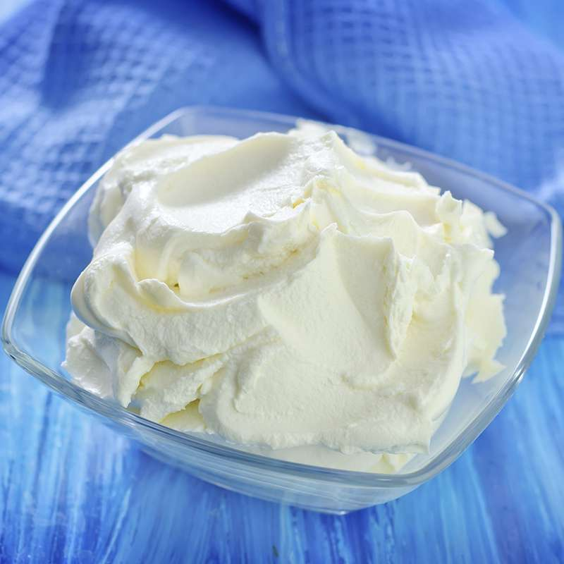

Es un queso cremoso, consistente, de color blanco-amarillento muy claro, con sabor dulce y altamente calórico. Aunque técnicamente hablando, el Mascarpone no es un queso, sino el resultado de añadir un cultivo de bacterias a la nata extraída de la leche que se usa en la fabricación del parmesano. Sin embargo, suele ser descrito como queso de cuajada, aunque se elabora de forma muy parecida al yogur. Después de agregar el cultivo de bacterias a la nata, se calienta suavemente, luego se deja que madure y espese. Es un producto muy delicado que debe ser consumido fresco porque se pone rancio rápidamente.
